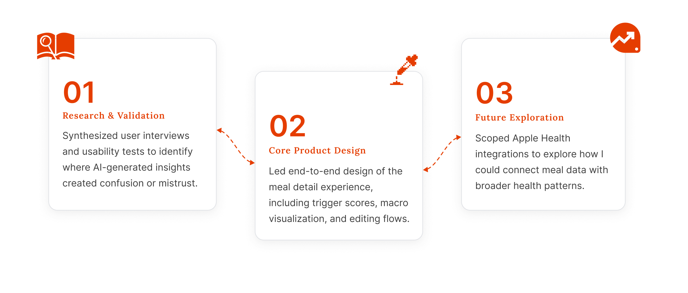
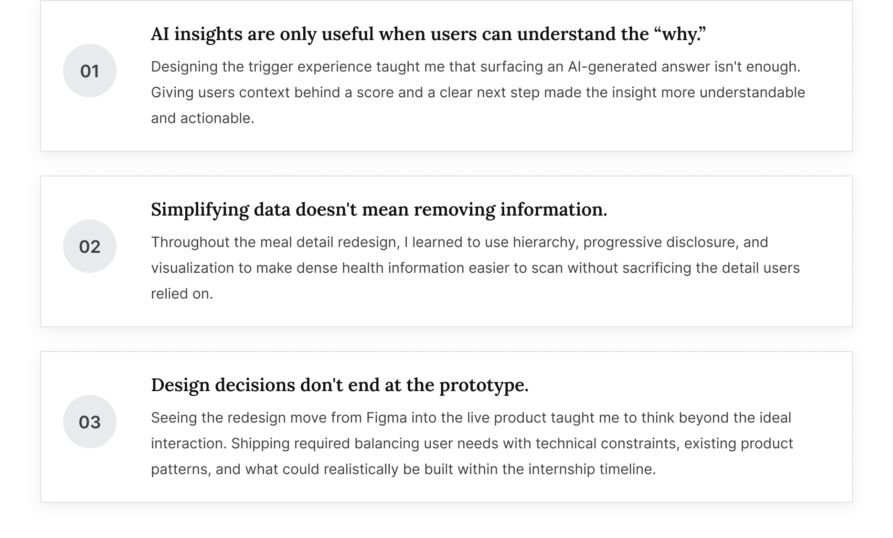

Making AI Health Insights Easier to Understand and Trust

Redesigned the core meal experience for an AI gut-health startup,
reducing insight interpretation time by 47% and improving trigger
identification by 34%.
Role
Product Design Intern
Timeline
Summer 2025
Team
2 Designers
2 Engineers
1 Product Manager
Skills
Product Design
User Research
Prototyping
Context
Logging food was easy but understanding what it meant wasn't.
Flourish uses AI to connect what users eat with how they feel.

But those insights are only useful if users can log meals accurately and understand why the product surfaces certain patterns. My internship focused on strengthening both sides of that loop.
What I Owned
I took the core experience from research to shipped design, then explored what came next.

The Problem
Existing tools gave users more data, not more understanding.
Across the 5 leading nutrition and meal-logging apps I audited, nutrition data was plentiful. What was missing was a clear connection between what I ate → how I felt → what I could do differently.

Research
15 user interviews revealed why more data wasn't building more trust.
Across the interviews, three needs consistently emerged:
With so many trigger foods and different levels of them, it's impossible to keep track on my own. I need technology to remember for me, but it's falling short at connecting that to my symptoms.
IBS patient
I log everything and still have no idea what caused my flare-up last week. It feels like I'm just collecting data for nothing.
GERD patient
Drowning in data
Dense nutrition breakdowns make "insights" feel like a chore, not help.
Users needed insights specific to their body
Users wanted food triggers connected to their own symptoms, not generic nutrition rules.
The cause → effect link was missing
Users couldn't connect what they ate to how they felt, making AI-generated insights harder to trust.
Opportunity
The research pointed to three ways we could turn data into understanding.

Design
Each opportunity became a core part of the meal experience.
Rather than adding more information, I focused the redesign on explanation, glanceability, and lower-friction logging.

Testing & Iteration
Testing revealed that the visualization made scale harder to interpret.
In usability testing, users misread the circular indicators because the visual proportions didn't clearly communicate the relative scale of each macro.
I replaced them with horizontal bars, making differences easier to compare at a glance.

Design Evolution
I evolved the experience from displaying data to making it understandable.
Making meal data easier to interpret
The original meal card compressed nutrition data into a single line, making it hard to understand the meal at a glance. I reorganized the experience around a clearer information hierarchy: meal context first, then a dedicated macro summary that visualized each value against its scale, making nutrition easier to scan without overwhelming users.

Making AI insights explainable and actionable
Early designs represented trigger risk through color-coded labels like "Low" or "Moderate," which acted more like verdicts than explanations. I redesigned the experience around explainability, pairing numeric scores with concise summaries and ingredient-level breakdowns that revealed contributing foods and relevant alternatives.

The Solution
Turning complex health data into clear, actionable insights.
A redesigned meal experience that connects what users eat to how it may affect them, making nutrition easier to interpret and AI-generated insights easier to act on.
Impact
My redesign shipped and made meal insights faster and easier to understand.
The redesigned meal experience shipped in Flourish AI and was featured in the product's App Store preview. In a comparative usability study with 8 beta users, the redesign helped users interpret meal insights faster and more accurately identify their personal food triggers.

Looking Ahead
Extending insights beyond individual meals.
After shipping the core meal experience, I explored how third-party health data, such as Apple Health, could extend insights beyond individual meals. By connecting signals like sleep, activity, and heart rate with logged meals and symptoms, the experience could surface patterns users may not recognize on their own. Rather than exposing more raw data, I designed lightweight summaries that translated those relationships into understandable, actionable insights.

Reflection
What this project taught me.
Shipping the meal detail redesign left me with a few principles I'll carry into future product work.
